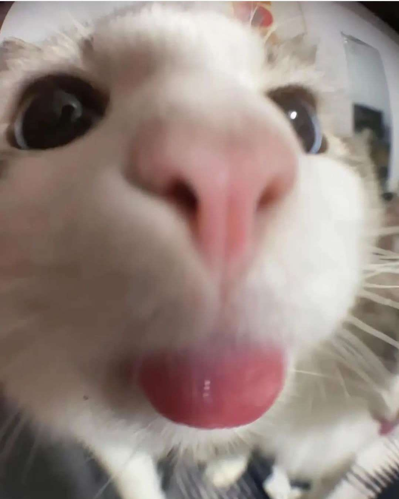

@media

5 interesnati fakti par kaķiem.
- Kaķi nejūt saldu garšu.
- 1963. gadā kaķis pirmo reizi devās kosmosā.
- Kaķi gandrīz 1/3 no savas dzīves pavada, mazgājot sevi.
- Viņi arī gandrīz 1/3 no savas dzīves pavada guļot.
- Kaķiem ir līdz 100 dažādu balss toņu - suņiem ir tikai 10.